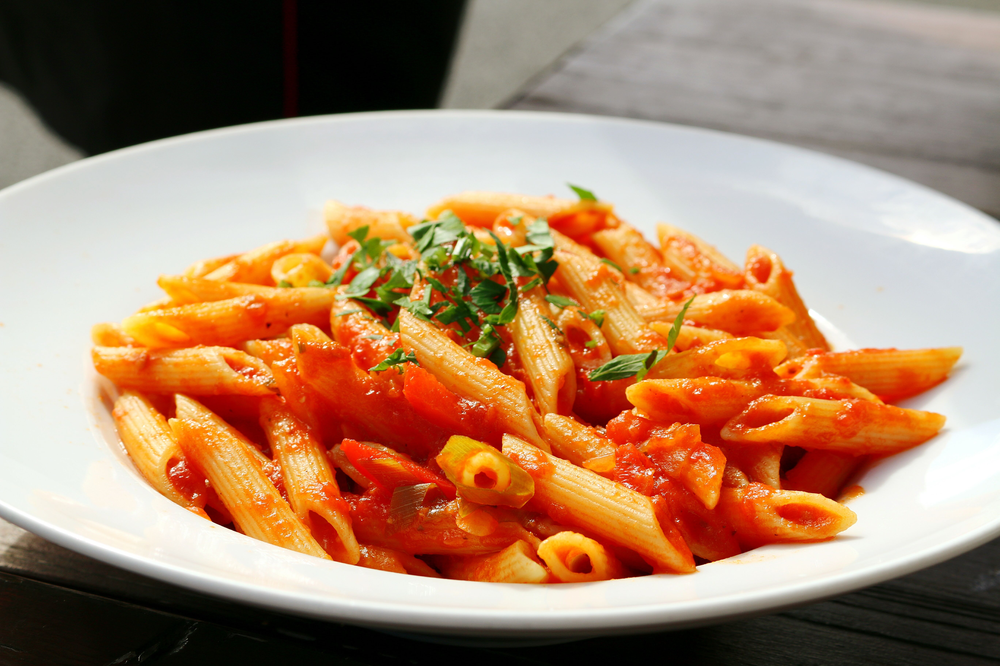

Cutting Costs and Calories - Chicken Pasta
-------- Spicy Chicken Sausage Pasta --------
Time
Difficulty
Cost per serving - £2.27
Serves - 3
Export to PDF
Ingrediants
- 9 Chicken Sausages
- 1 Tin Chopped Tomoatoes
- Pasta of choice - 75g uncooked/person
- 1 Pepper
- 1 Onion
- 2 Garlic Cloves
- Seasonings - 2 tbl spoons paprika, 1 tbl sppon garlic powder, 2 tbl spoons chili flakes (or to taste)
Steps
- Fry off the chicken sausages until browned.
- Remove from pan and cut into small peices.
- Chop the peppers and onions and add to pan. Fry until softened.
- Add the saugsages back in along with the seasonings. Fry until cooked through
- Add in the tinned Tomoatoes and bring to a simmer. Simmer for at least 20 minutes.
- Bring salted water in a pan to a boil and cook pasta according to packet instructions.
- Drain pasta and mix in with sauce.
- Enjoy!
